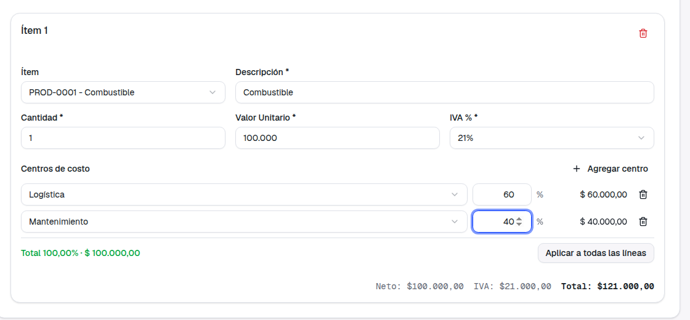
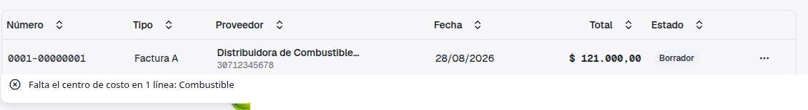
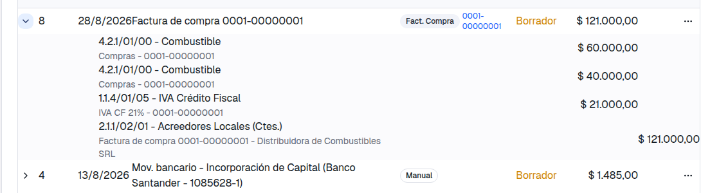

Guía de presentación — qué se pidió, qué cambió y cómo usarlo
El ticket 583 ya se había entregado una vez: renombramos "Costo Unitario" a "Valor Unitario", agregamos el centro de costo por línea de factura de compra y permitimos confirmar varias facturas a la vez. Pero al usarlo en el día a día, nos escribiste para aclarar que faltaba algo importante:
En criollo: pedías dos cosas que la primera entrega no cubría. Primero, que si tu empresa decide trabajar con centros de costo, no sea opcional: toda factura de compra o venta con ítems de ingresos o egresos tiene que tener su centro asignado antes de poder confirmarse. Segundo, que una misma línea pueda repartirse entre más de un centro, no solo elegir uno de una lista.
Cada línea de la factura tenía un selector simple: elegías un único centro de costo de una lista desplegable, o lo dejabas vacío. No había forma de repartir una misma línea entre dos o más centros, y nada impedía confirmar una factura sin completar ese dato.
Cada línea tiene un editor de reparto: agregás los centros que necesites, con el porcentaje que le corresponde a cada uno. Si tu empresa lo exige, la factura no se puede confirmar hasta completar el reparto de todas las líneas que correspondan.
Vamos a seguir el caso típico: una factura de compra de combustible por $100.000 que corresponde repartir 60% a Logística y 40% a Mantenimiento.



El editor arranca vacío, mostrando "Sin reparto — se usa el centro predeterminado del ítem": si no hace falta repartir, no hay que tocar nada. Si un ítem se imputa 100% a un solo centro, alcanza con agregar una única fila al 100%, y se ve prácticamente igual que el selector de antes: el caso simple no se complica. Y si varias líneas se reparten de la misma forma, el botón "Aplicar a todas las líneas" copia el reparto sin tener que cargarlo de nuevo en cada una.
En Contabilidad → Configuración → Integración Comercial encontrás el nuevo switch. Con el switch activado, toda línea de una factura de compra o de venta que se impute a una cuenta de ingresos o egresos necesita su reparto completo para poder confirmarse. Con el switch apagado (que es como queda por defecto), el centro de costo sigue siendo opcional, exactamente como funcionaba hasta ahora.
Si tenés varias facturas en borrador para confirmar de una vez, la confirmación masiva sigue funcionando igual que antes: las que tengan el reparto incompleto quedan afuera, se confirman las demás, y al final te dice cuáles faltaron y por qué.
Hasta ahora, una factura de venta con ítems de distintos centros de costo imputaba todo el asiento a un solo centro — eso era un error que veníamos arrastrando. Con esta entrega se corrige: cada centro recibe su propia imputación, igual que en compras. Es una mejora, pero como consecuencia, los asientos nuevos de venta se van a ver distintos de los que generaste hasta ahora para facturas con varios centros. Los asientos viejos no se recalculan ni se modifican.